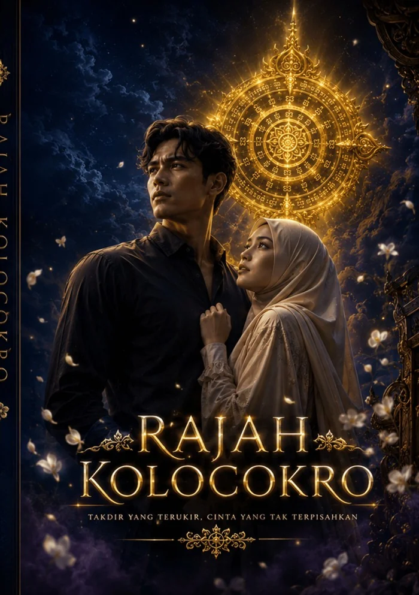

Rajah Kolocokro
Naskah fiksi berlatar khazanah tradisi Jawa yang menelusuri simbolisme rajah perlindungan batin, laku pengendalian diri, serta pertautan antara warisan leluhur dan tanggung jawab moral tokoh-tokohnya.
Laman Resmi & Dokumentasi Pribadi
Khohar Muhamad Fatahurrohman menulis karya fiksi berlatar tradisi Nusantara serta memimpin PT Aigarn Akademi Artificial. Minat kajian dan bacaannya bertumpu pada sejarah ketatanegaraan Indonesia, perkembangan teknologi informasi, serta dinamika sosial dan kebudayaan.
Situs ini dikelola sebagai ruang dokumentasi pribadi yang menghimpun riwayat biografis, catatan pendidikan, kiprah keorganisasian, serta daftar karya tulis yang telah diterbitkan.
Khohar Muhamad Fatahurrohman tumbuh dan menyelesaikan pendidikan menengah kejuruan di bidang Teknik Komputer dan Jaringan pada SMKS Trisakti Ngawi, Jawa Timur, sebelum melanjutkan studi pendidikan tinggi pada Program Sarjana Terapan (D-IV) Teknik Informatika di Politeknik Negeri Malang. Sejak masa sekolah menengah, ia aktif menekuni kegiatan kepenulisan, kajian kepramukaan, serta kepalangmerahan di Kabupaten Ngawi.
Di samping latar belakang teknis di bidang informatika dan perannya sebagai Direktur PT Aigarn Akademi Artificial, ia menaruh perhatian khusus pada sejarah ketatanegaraan Indonesia, tata kelola teknologi, serta khazanah kebudayaan Nusantara. Dalam dunia kepenulisan populer, ia menulis sejumlah cerita berseri di pelantar Fizzo Novel yang mengangkat unsur tradisi Jawa, seni bela diri kanuragan, tradisi debus Banten, dan folklor masyarakat.
Program Sarjana Terapan (D-IV) Teknik Informatika
Direktur
Teknik Komputer dan Jaringan (TKJ)
Hubungan Masyarakat (Humas I)
Ketua Panitia MUSPPANITRA (2025) & Anggota Bidang Kajian Kepramukaan
Anggota Bidang Kajian Dakwah Islam
Pramuka Penegak Garuda, Ketua Pramuka Putra & Ketua PMR
Empat naskah fiksi berseri yang diterbitkan secara daring melalui pelantar Fizzo Novel. Setiap karya mengangkat latar tradisi lokal, khazanah bela diri tradisional, serta dinamika sosial masyarakat Nusantara.

Naskah fiksi berlatar khazanah tradisi Jawa yang menelusuri simbolisme rajah perlindungan batin, laku pengendalian diri, serta pertautan antara warisan leluhur dan tanggung jawab moral tokoh-tokohnya.

Cerita fiksi laga yang diinspirasi oleh legenda kanuragan dalam tradisi lisan Nusantara, mengisahkan disiplin perguruan silat, ujian kesetiaan murid terhadap guru, serta etika penggunaan kekuatan.
Kisah dramatik yang berlatar kesenian tradisional debus Banten, menyoroti laku tirakat, keteguhan batin para pelaku seni tradisi, serta upaya menjaga warisan budaya di tengah perubahan zaman.

Fiksi romansa kontemporer yang memadukan kehidupan keseharian masyarakat dengan mitos dan kepercayaan folklor lokal, menggambarkan konflik batin serta relasi sosial antartokoh.
Untuk keperluan korespondensi resmi, undangan diskusi, urusan kelembagaan, maupun tanggapan atas karya tulis, silakan menghubungi melalui alamat surel atau formulir pesan di bawah ini.